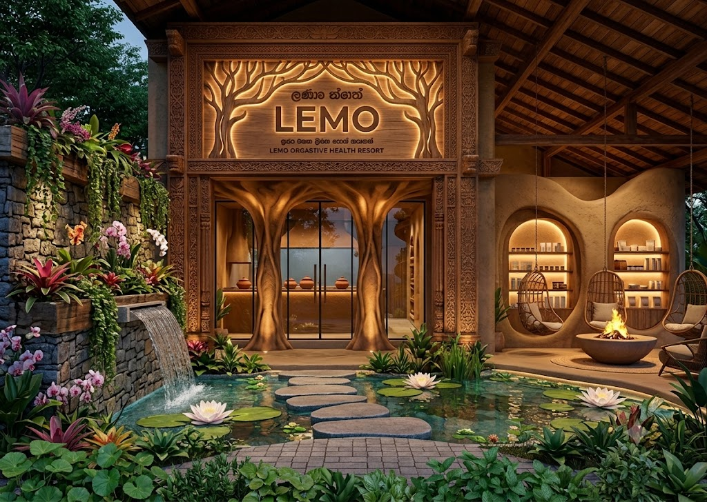
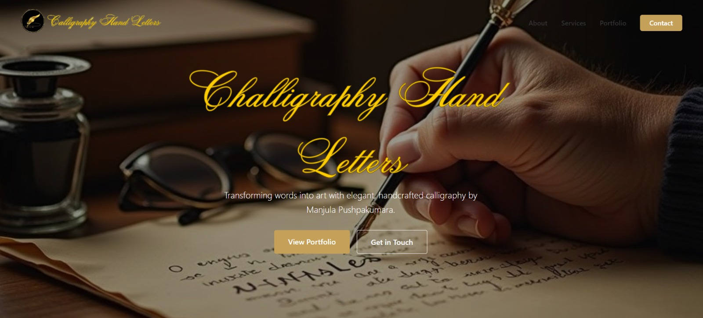

A selection of the software, automation, and infrastructure solutions we have engineered to solve critical business bottlenecks.

A high-performance custom web platform engineered for real-time client operations. Replaced legacy systems and reduced data sync errors to zero.
View Details →An internal automation system that securely processes thousands of records daily, completely removing manual data entry across three departments.
View Details →
RUuMA Entertainment is a sleek digital platform offering live event management, artist bookings, multimedia productions, and seamless online ticketing services.
View Details →
